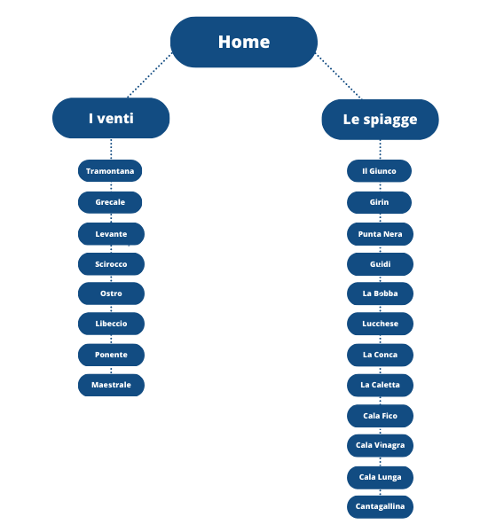
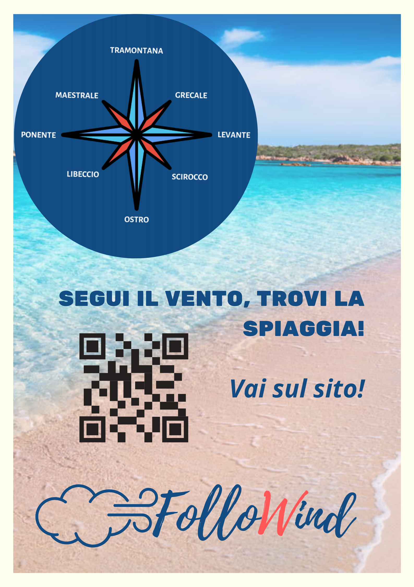
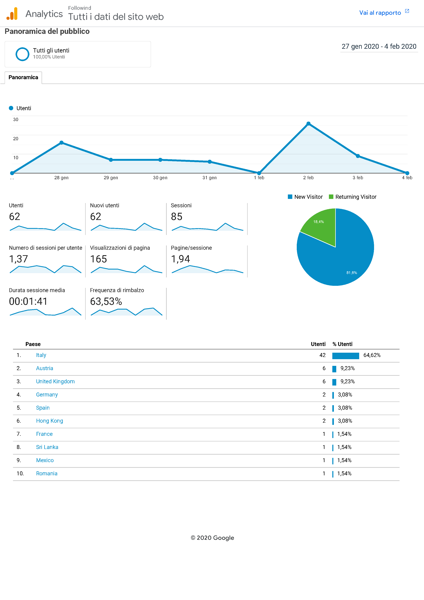

Followind, realizzato con html5 e Java, è un sito responsive, intuitivo e comodo che fornisce in tempo reale la direzione del vento ed il bollettino meteo di Carloforte. Il progetto si prefigge di aiutare tutte quelle persone, turisti e non, che desiderano trascorrere il proprio tempo al mare, sull’Isola di San Pietro (Carloforte), nel migliore dei modi. L'isola presenta il vantaggio di possedere su tutto il perimetro della costa spiagge e cale, aspetto che si dimostra essere strategico per fare del vento un amico e non un nemico. Con Followind segui il vento e scegli la spiaggia!
Il vento è uno degli elementi della natura di cui spesso nel periodo estivo viene sottovalutata l’importanza. Prestare invece attenzione alle correnti permette di trascorrere al meglio le proprie giornate al mare durante le vacanze. Il vento può essere infatti causa di spiacevoli soggiorni in spiaggia: mare impetuoso, sabbia negli occhi e meduse sono alcuni fra i principali responsabili. Obiettivo di Followind è promuovere la conoscenza dei venti e dell’imperdibile varietà di spiagge dove, seguendo il vento stesso, è possibile andare.
Il target utente primario è il turista in visita e successivamente gli stessi frequentatori ed abitanti dell’isola i quali possono restare costantemente aggiornati sul vento e sulle condizioni meteo.
| Sardegna Turismo | Carloforte Turismo | Sardegna con me | My sardinia |
|---|---|---|---|
Pregi:
|
Pregi:
|
Pregi:
|
Pregi:
|
Difetti:
|
Difetti:
|
Difetti:
|
Difetti:
|
Followind, realizzato con html5 e Java, è un sito responsive, intuitivo e comodo che fornisce in tempo reale la direzione del vento ed il bollettino meteo di Carloforte. Il progetto si prefigge di aiutare tutte quelle persone, turisti e non, che desiderano trascorrere il proprio tempo al mare, sull’Isola di San Pietro (Carloforte), nel migliore dei modi. L'isola presenta il vantaggio di possedere su tutto il perimetro della costa spiagge e cale, aspetto che si dimostra essere strategico per fare del vento un amico e non un nemico. Con Followind segui il vento e scegli la spiaggia! 
I temi che fondano il progetto Followind sono il vento ed il mare, pertanto ho scelto come colori dominanti il blu, il celeste, il turchese ed il rosso/arancione corallo, animale che abita il fondale marino e che i corallari, di cui per l’appunto San Pietro è il protettore (Carloforte-Isola di San Pietro-), sono soliti pescare.
I font del logo Followind (Playlist script) e dei titoli (Shadows Into Light) hanno lo scopo di richiamare con le loro linee sinuose l’immaginario del vento e delle onde, mentre il carattere “Arial” utilizzato per la componente testuale mira ad una lettura su schermo che sia il più agevole possibile per l’utente.
La transizione cromatica al passaggio del mouse, sulla maggior parte delle parole con “link”, richiama l’attenzione dell’utente incentivando l’interattività. Ho scelto di impostare un menù che fosse il più semplice e lineare possibile in modo da permettere al fruitore del sito di navigare in maniera semplice e chiara.
La componente testuale è disposta secondo un allineamento di centro pagina al fine di garantire una lettura rapida e che non stanchi l'occhio dell'utente.
HTML
CSS
JAVA SCRIPT
"Listigo" è il template dal quale Followind ha preso spunto
"Canva" è il tool di grafica utilizzato all'interno di Followind
"Adobe Color" ha orientato la scelta dei pantoni
"Balsamiq" è il programma utilizzato per la realizzazione del Wireframe
"W3Schools" è il sito che ha supportato la progettazione di Followind
"Font Awesome" è il toolkit di icone utilizzato per i social di Followind
"Github" è il servizio di hosting che ha permesso a Followind di essere on-line
Followind a differenza dei siti web competitors, sceglie di focalizzarsi solo su due aspetti in particolare: il vento, nelle sue declinazioni, e le spiagge dell’Isola di San Pietro. Il carattere innovativo del progetto risiede nell’inserimento al suo interno di una stazione meteo al quale è annessa una legenda con le direzioni del vento. Il progetto s’inserisce nel panorama dei suoi competitors dotato quindi di una forte focalizzazione e di una connotazione volta all’utilizzo pratico (prima di andare al mare o direttamente sul posto se si sceglie di cambiare spiaggia) grazie ad una ricerca incrociata.
Il progetto, attraverso l'utilizzo del sito web, si prefigge di promuovere il territorio e di seguire il vento come buona pratica nella scelta della spiaggia.
• Il Sito si rivolge principalmente ai turisti dell’isola, generalmente di provenienza europea con un’età compresa tra i 16 ed i 60 anni circa, ma anche agli abitanti stessi dell’isola che desiderano avere a portata di mano le previsioni meteo e la direzione del vento.
• I gruppi di interesse ai quali Followind è indirizzato vengono solitamente raggiunti attraverso i social media, le informazioni che possono essere date tramite un infopoint, l’advertising e, attualmente in maniera minore, attraverso la televisione.
• Gli aspetti interni al sito web Follwind che possono aiutarlo a raggiungere i suoi obiettivi sono la grafica moderna e l’intuitività che ne permette una fruizione semplice dei contenuti.
• Followind aiuta a scegliere in modo consapevole la spiaggia in cui andare affinché il vento non rovini l’esperienza balneare sull’Isola di San Pietro.
• Una possibile barriera alla diffusione di Followind può essere riscontrata nella mancanza di un’app per smartphone che renderebbe sicuramente il sito maggiormente fruibile in qualsiasi momento ed in maniera smart.
Penso che i modi migliori per promuovere Followind siano: i social media, i quali offrono la possibilità di una targettizzazione mirata e geolocalizzata; la Proloco di Carloforte, la quale fornisce le informazioni necessarie sull’isola e sul paese ai turisti; ed i gadget e manifesti che possono essere regalati ed affissi in prossimità delle spiagge. 
Gli obiettivi comunicativi che Followind si era prefissato sono stati raggiunti, ritengo infatti che il messaggio sia stato recepito (grazie alle interazioni degli utenti sulla pagina Fcaebook di Followind), e che il target audience sia stato rispettato. Google Analytics dimostra inoltre come Followind non sia stato fruito solamente da utenti europei ma anche extraeuropei. 
Le immagini principali utilizzate su Followind per illustarre le spiagge dell'Isola di San Pietro sono da attribuire ai seguenti siti: